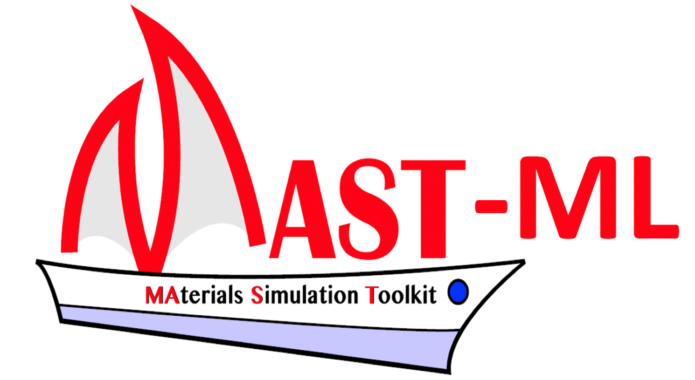

MAST-ML

MAST-ML provides a cohesive environment for training and testing standard machine learning models along with useful, automatically generated visuals. MAST-ML differs from other machine learning tools by taking a specialized approach to the material science research domain.
Details
- GitHub
- PyPI
- Funding:
- "SI2-SSI: Collaborative Research: A Computational Materials Data and Design Environment" (National Science Foundation Award Number: 1148011)
- "DMREF-A Combined Experiment and Simulation Approach to the Design of New Bulk Metallic Glasses" (National Science Foundation Award Number: 1332851)
- "Any opinions, findings, and conclusions or recommendations expressed in this material are those of the author(s) and do not necessarily reflect the views of the National Science Foundation."
- Members:
- Prof. Dane Morgan
- Dr. Ryan Jacobs
- Dr. Tam Mayeshiba
- Dr. Henry Wu
- Benjamin Afflerbach
- Prof. Raphael Finkel
- Luke Harold Miles
- Robert Max Williams
- Matthew Turner